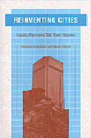

Interviews with planners devoted to the needs of the poor and working class
Interviews with planners devoted to the needs of the poor and working class


 Interviews with planners devoted to the needs of the poor and working class
Interviews with planners devoted to the needs of the poor and working class

|  |
Reinventing CitiesEquity Planners Tell Their StoriesNorman Krumholz and Pierre Clavelpaper EAN: 978-1-56639-210-5 (ISBN: 1-56639-210-1) |
"[A]n important account of the progressive movement among planners written by two leading progressives."
—Journal of the American Planning Association
Reinventing Cities emphasizes the extraordinary accomplishments of eleven urban planners who work for the needs of low income and working class people. Through the voices of equity planners who have worked "in the trenches" of city halls, Norman Krumholz and Pierre Clavel explore the inner dimensions of social change, economic development, community organizing, and the dynamics of implementing and producing fair housing. Preceded by "snapshots" that describe the demographics, politics, and economics of each specific city or region, the editors' interviews with these leading progressive planners highlight productive strategies, disquieting failures, and the cities in which the fought for equity.
Included are conversations with Rick Cohen, former director of Jersey City's Department of Housing and Economic Development; Dale F. Bertsch, former first director of the Miami Valley Regional Planning Commission, Dayton, Ohio; Robert Mier, former commissioner of the Department of Economic Development (DED); Kari J. Moe, former deputy commissioner of Research and Development, DED'; Arturo Vazquez, former director of Mayor Washington's Office of Employment and Training, Chicago; Margaret D. Strachan, former city commissioner, Portland, Oregon; Peter Dreier, former housing director, Boston Redevelopment Authority, and policy aide to Mayor Raymond Flynn; Billie Bramhall, planning staff, Mayor Federico Pena, Denver, Colorado; Howard Stanback, city manager, Hartford, Connecticut; Derek Shearer, former Planning Commission chairman, Santa Monica, California; and Kenneth Grimes, senior planning analyst, San Diego Housing Commission.
"Because Reinventing Cities covers so much ground, the book's "case studies" are its chief value.... city governments have increasingly been forced to develop their own solutions as best they can. Reinventing Cities is one of the best books to date on how they have done so."
—H-Net
"The essays are introspective, offering much about each planner's background and ways of thinking. Their stories offer both variety and similarity; anyone who has worked in community planning will find themselves nodding along in recognition and agreement with descriptions of ecstatic successes, devastating setbacks, endless meetings, and recurring fantasies of leaving the field altogether."
—Shelterforce Online
Preface
1. Introduction: Professional Support for Equity Planning?
2. Jersey City: Interview with Rick Cohen
3. Dayton's Miami Valley, Ohio: Interview with Dale F. Bertsch
4. Chicago: Interviews with Robert Mier, Arturo Vazquez, and Kari Moe
5. Portland, Oregon: Interview with Margaret Strachan
6. Boston: Interview with Peter Drier
7. Denver: Interview with Billie Bramhall
8. Hartford: Interview with Howard Stanback
9. Santa Monica: Interview with Derek Shearer
10. San Diego: Interview with Kenneth Grimes
11. Lessons Learned
Index
The Authors and Planners
 | A former planning director of Cleveland, Ohio, and past president of the American Planning Association, Norman Krumholz is Professor of Urban Planning at Cleveland State University and the co-author (with John Forester) of Making Equity Planning Work: Leadership in the Public Sector (Temple). |
Pierre Clavel, Professor of City and Regional Planning at Cornell University, is the author of Opposition Planning in Wales and Appalachia (Temple).
Urban Studies
Political Science and Public Policy
Conflicts in Urban and Regional Development, edited by John R. Logan and Todd Swanstrom.
Conflicts in Urban and Regional Development, edited by John R. Logan and Todd Swanstrom, includes books on urban policy and issues of city and regional planning, accounts of the political economy of individual cities, and books that compare policies across cities and countries.
© 2015 Temple University. All Rights Reserved. This page: http://www.temple.edu/tempress/titles/1059_reg.html.